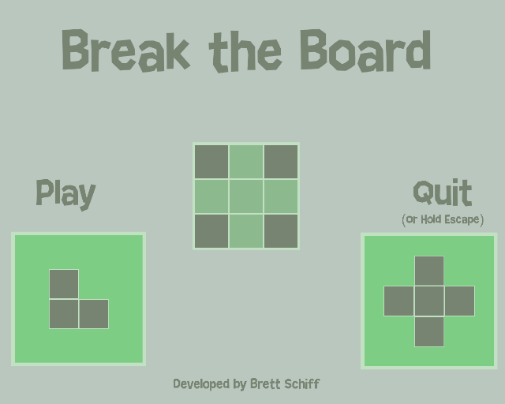
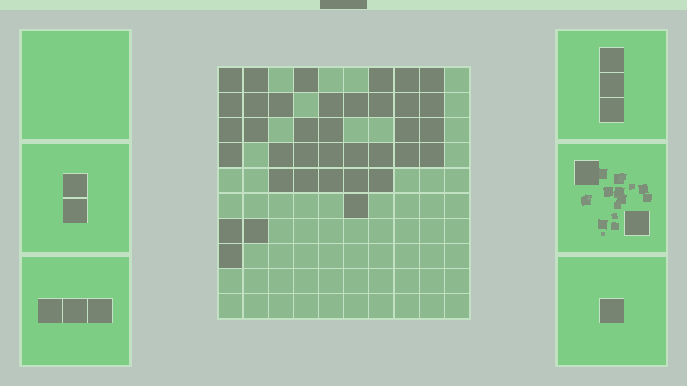

|

A game I made in 48 hours using Unity for Ludum Dare 42 with the theme Running out of Space. A combination of Tetris and Blokus, Break the Board is a game where you place randomly spawned pieces onto a game board. Filling entire columns or rows causes them to break and the board size to shrink. You lose when you run out of spaces for pieces to spawn, you win when you break the board. It's only available on Windows right now, but I'd like to polish it up more and release it on the Google Play Store. To play it, you can view it on the Ludum Dare page or download the game executable directly.

|